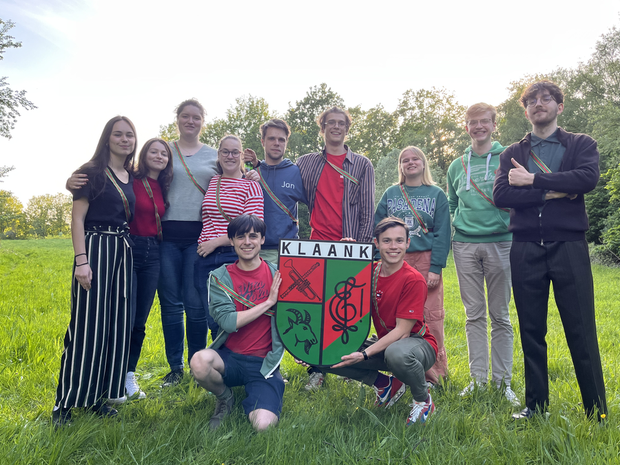

Op het einde van het academiejaar 2021-2022, hadden een paar studenten het gevoel dat er nog iets miste op de buitencampus: een studentenfanfare! Twee van hen hadden eerder bij Ambifaarke gezeten in Diepenbeek en vonden dat toen zó leuk dat ze besloten KLAANK op te richten. Een nieuwe studentenfanfare/-harmonie met wekelijkse repetities en een focus op vriendschap en studentikoziteit. Houtblazer, koperblazer of slagwerker, iedereen is welkom om mee te spelen.
Jullie zijn een fanfare maar hebben ook houtblazers, hoe werkt dat?
Ja, inderdaad, wij noemen onszelf een fanfare maar hebben eigenlijk meer de
bezetting van een harmonie. We vonden fanfare gewoon een leuker woord en een
betere beschrijving van de sfeer die er bij ons is, veel plezier bij het spelen
van muziek. Sommige van onze vroege leden hadden al bij een studentenfanfare
gezeten waar houtblazers ook meespeelden dus zo vreemd leek het ons niet. (oh
ja, studentenharmonie was ook al bezet in Antwerpen :p )
Onze kleuren zijn groen en rood (of sinopel en keel, als ge cool wilt zijn).
